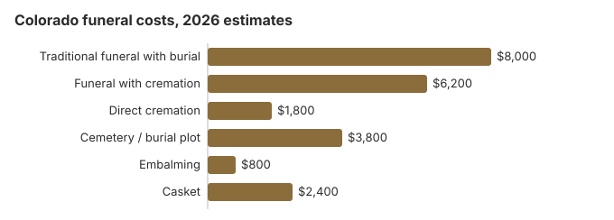

Funeral Costs in Colorado: What Families Pay in 2026
In Colorado, direct cremation starts near $1,800 and a full traditional funeral with burial can reach $10,400. Prices are set by each home, and Denver and mountain-town quotes rarely match.
Colorado Funeral Costs, Line by Line
DORA registers Colorado funeral homes but has no say over their prices.
| Service | Estimate | Usual band |
|---|---|---|
| Traditional funeral with burial | $8,000 | $6,000 – $10,400 |
| Funeral with cremation | $6,200 | $4,960 – $8,060 |
| Direct cremation | $1,800 | $1,260 – $2,520 |
| Cemetery / burial plot | $3,800 | $1,900 – $7,600 |
| Embalming | $800 | $500 – $1,500 |
| Casket | $2,400 | $800 – $6,400 |
How these were built: we did not survey Colorado funeral homes. The figures are modelled estimates for planning, not quotes and not professional advice; see the method and the disclaimer.
State sources: Colorado Department of Regulatory Agencies; Colorado DHS Adult Financial Reference Guide (Burial Assistance).

What Moves a Colorado Quote
Colorado quotes reflect housing and property costs, how many homes compete nearby, and distance. Prices across the Mountain region sit close to the $8,300 US median, and Front Range and rural quotes commonly differ by 10-30%.
About 72% of Colorado deaths end in cremation, 8.6 points above NFDA's 63.4% national projection for 2025.
Colorado Cremation or Burial
Cremation
- Direct, about $1,800
- With a service, about $6,200
- No cemetery costs
- Mountain scattering is popular
- 72% of Colorado deaths
Traditional Burial
- Service near $8,000
- Plot near $3,800
- Most cemeteries want a liner
- A permanent grave
- Metal casket median: $2,500 nationally (NFDA 2023 General Price List Study); Colorado prices depend on the seller
Lower-Cost Colorado Choices
| Choice | Typical cost | Covers |
|---|---|---|
| Direct cremation | $1,800 | Cremation alone, no gathering; Colorado needs a permit but no wait (C.R.S. § 12-135-307). |
| Direct burial | $4,000 | Burial with no viewing or ceremony, the plainest burial. |
| Green burial | $4,400 | An unembalmed body in a biodegradable container, where a Colorado cemetery allows it. |
| Cremation + memorial | $6,200 | Cremation now, memorial later |
| Traditional funeral | $8,000 | Viewing, service and burial together |
Distance and Mileage in Colorado
Our $8,000 Colorado estimate is moderate, though Denver-area homes often charge more than rural ones. Distance shows up on Colorado price lists: when the home is more than about 30 miles from the place of death or the cemetery, mileage can add $100-$400.
Colorado and the FTC Funeral Rule
Report a Colorado home that breaks it at ftc.gov; the Funeral Consumers Alliance can help too.
Colorado Charges to Check
Look for these on a Colorado bill:
- Embalming listed as required, when refrigeration satisfies Colorado's 24-hour rule.
Colorado Cremation and Burial Guides
Our deeper Colorado pages:
Cremation Costs in Colorado
Colorado cremation, chosen 72% of the time, costs about $1,800 direct or $6,200 with a service; urns and scattering rules are covered.
Burial Costs in Colorado
Every part of a Colorado burial, from a $3,800 plot to the marker, adding up to $18,120 to $22,620.
Colorado Prices by City
Colorado city estimates:
Colorado Funeral Assistance
- Burial Assistance pays up to $1,500 but nothing at all if the bill tops $2,500; estate and family money reduce it.
- The $255 Social Security death payment goes only to an eligible surviving spouse or child, who applies by calling 1-800-772-1213 within two years of the death. The funeral bill itself is governed by C.R.S. 12-135-107: a Colorado establishment must hand over a written, itemized list of every service and item before you choose the funeral, cannot make you buy anything on it that the law does not require, and may label a charge a cash advance only when it is the same amount the family would pay the outside vendor directly.
- The person who paid a Colorado veteran's funeral can claim on VA Form 21P-530EZ: up to $1,032 for burial and $1,032 for a plot when a non-service-connected death is on or after October 1, 2026 (see our veteran burial benefits guide).
- Medicaid and charity routes: our payment assistance guide and no-money funeral guide.
Educational Resources
- Funeral Consumers AllianceIndependent nonprofit consumer advocacy for funeral rights
- FTC Funeral RuleThe federal rule protecting funeral consumers
- Funeral Insurance GuideCompare final expense and burial insurance options
- Best Burial Insurance CompaniesSide-by-side comparison of top burial insurance providers
- Payment Assistance GuideGovernment programs and financial help for funeral costs
- Insurance Plan ComparisonCompare coverage, premiums, and payout speed across providers
Compare Funeral Costs
- Average Funeral Cost in 2026National cost breakdown with real prices
- Cremation vs. Burial Cost ComparisonSide-by-side price comparison to help you decide
- Funeral Cost BreakdownEvery line item explained: know what you're paying for
- Cheapest Funeral OptionsLower-cost alternatives, with typical price ranges
- Direct Cremation: Most Affordable OptionNFDA 2023 median $2,645 with a family-supplied container (latest available)
- How to Compare Funeral PricesStep-by-step guide to getting the best price
First Steps for a Colorado Funeral
A sensible order:
- Pick cremation or burial: cremation in Colorado or burial in Colorado.
Colorado death certificates went up in 2026
Since January 1, 2026, Colorado Vital Records charges $25 for the first certified copy of a death certificate and $20 for every extra copy bought on that same order. If the year of death is unknown, each extra year searched costs $1; a verification of death costs the same $25, and no fee is refunded (CDPHE, order a certificate; checked October 29, 2026). The funeral home usually orders the first copies when it files the record, so tell it how many you need and the cost is added to its bill.
- County offices: the vital records office in the county where the death occurred issues the same certificate, often the same day by appointment, and the state office holds records back to 1900.
- Third-party sites: the state approves only VitalChek and GoCertificates, which add processing fees of about $14 and $12. Ordering directly from a Colorado office avoids them.
- Eligibility: applicants need a direct and tangible interest in the record (C.R.S. 25-2-118), shown with photo ID and proof of relationship; records become public after 75 years.
With extra copies at $20, four certificates now cost $85, so ask the insurer or bank whether a copy or a verification will do before ordering more.
Colorado's registration office, Burial Assistance and veterans cemeteries
Colorado registers funeral homes and crematories through the Colorado Department of Regulatory Agencies (303-894-7800). Until now the people doing the work, directors, embalmers and cremationists, have needed no state license; Senate Bill 24-173 (C.R.S. 12-135-501) changes that from January 1, 2027, with a provisional license for current practitioners in the meantime.
Colorado leaves families free to do much of the work themselves; the Funeral Consumers Alliance does not include it among the nine restrictive states. Cremation needs a permit but no waiting period (C.R.S. § 12-135-307).
Burial Assistance and its $2,500 cap
For someone who received Old Age Pension, Aid to the Needy Disabled, Aid to the Blind or a similar program, the state pays up to $1,500 toward the funeral, burial or cremation, directly to the provider. If the total bill exceeds $2,500 nothing is paid, and money from the estate or from relatives reduces the payment (Colorado DHS Adult Financial Reference Guide (Burial Assistance)). That cap rules out most traditional funerals against our $8,000 estimate, but direct cremation fits. Social Security's $255 goes only to a spouse or child.
Veterans
Fort Logan National Cemetery in Denver (303-761-0117) and the Fort Lyon and Pikes Peak national cemeteries (both 719-391-6920) are reserved by the funeral home with the VA's National Cemetery Scheduling Office (800-535-1117). On the Western Slope, the state's Veterans Memorial Cemetery of Western Colorado in Grand Junction (970-263-8986) takes calls directly.
Prepaid funerals
Preneed contracts in Colorado are regulated by the Division of Insurance, not the funeral registration office, and sellers need a license from the insurance commissioner (C.R.S. 10-15-103). When you pay cash, at least 75% of the price must go to a bank or trust company acting as trustee, and anything above 25% must be deposited within 45 days (C.R.S. 10-15-107). The seller has to tell you who the trustee is and confirm the deposit. If you cancel in writing within seven days, the seller must refund everything within ten days, and later cancellations must be repaid within 30 days; if you switch providers, the original seller may keep up to 15% (C.R.S. 10-15-105). Every Colorado preneed contract must state on its face that it is not insurance but is regulated by the Division of Insurance. Get a receipt for each payment, ask what happens if the seller closes, and check the seller's license with the Division at 303-894-7490 or 800-930-3745. Contracts paid through an insurance policy or annuity, rather than cash, are funded by that policy instead of the trust rule above, so read the policy's terms too.
Colorado checklist
- Lay two or more price lists side by side; C.R.S. 12-135-107 requires one before you choose.
- Choose refrigeration rather than embalming unless there will be a viewing.
- If Burial Assistance may apply, keep the total under $2,500 and call the county human services office first.
- For a veteran, ask about Fort Logan or Grand Junction before buying a plot.
- Complaints go to 303-894-7800.
Frequently Asked Questions
How much does a funeral cost in Colorado?
About $8,000 for a traditional funeral on our estimate, just under the $8,300 national median; cremation with a service is about $6,200 and direct cremation about $1,800. Price lists from two or three nearby homes will give your real number.
What does cremation save in Colorado?
At least $6,200: direct cremation is about $1,800, and a traditional funeral with burial is about $8,000 before a plot or vault.
What protections apply in Colorado?
In Colorado, as everywhere in the US, the FTC Funeral Rule requires an itemized General Price List, phone price quotes, and no fee for using a casket bought elsewhere. According to the Funeral Consumers Alliance, Colorado does not require families to hire a funeral director for every step. You can confirm a Colorado funeral home's registration or file a complaint with the Colorado Department of Regulatory Agencies at 303-894-7800. Individual funeral directors are a newer matter: under Senate Bill 24-173 (C.R.S. 12-135-501), they must hold a state license starting January 1, 2027.
How can a Colorado family spend less?
Compare price lists before signing. Where local zoning allows, burial on family land with the right permits avoids cemetery charges altogether. Direct cremation, about $1,800, is the cheapest option statewide. Veterans can be buried free at Fort Logan, the county human services office handles Burial Assistance, and a spouse or child may get $255 from Social Security.
Does Colorado require embalming?
No. Colorado law gives a funeral home three choices once it takes custody of a body: it must embalm, refrigerate, cremate, bury or entomb the remains within 24 hours (C.R.S. 12-135-106). Refrigeration meets that rule, so embalming is a choice for a viewing, not a legal requirement.
Under the FTC Funeral Rule a Colorado funeral home may not charge for embalming you did not approve, unless state law required it (16 CFR 453.5). Colorado also lets a family with authority over the remains file the death certificate and disposition permit itself, without hiring a funeral director (Colorado death certificate completion guide). Questions about a provider go to the Division of Professions and Occupations (303-894-7800).
How does Colorado compare nationally?
Colorado's $8,000 traditional-funeral average is 4% below the $8,300 national median (NFDA 2023).
What is the cheapest funeral option in Colorado?
Direct cremation is the lowest-cost option in Colorado, starting at roughly $1,800. Direct burial comes next at around $4,000 and still avoids viewing, ceremony, and embalming, though the $3,800 Colorado plot estimate still applies.
How do I find a lower-cost Colorado funeral home?
Line up three price lists and look at two lines: direct cremation and immediate burial. A casket or urn bought elsewhere must be accepted without a handling fee.